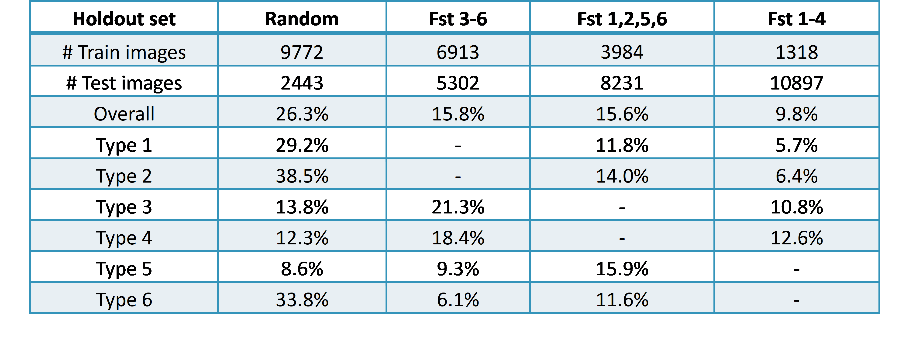
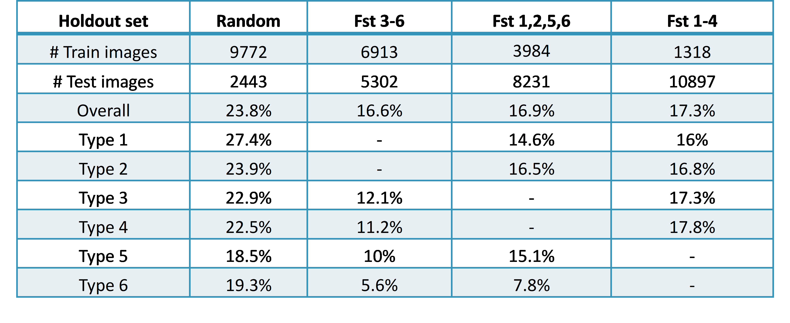
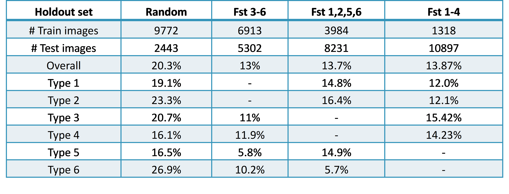

Abstract
Skin conditions can have a big impact on someone's health and quality of life, but getting a proper diagnosis can be difficult, especially for those with darker skin tones who are underrepresented in dermatology. Deep learning skin diagnosis models have the potential to revolutionize dermatology by offering accurate, automated, and simple to obtain diagnoses for a variety of skin conditions. Assessing these models' performance across a spectrum of skin tones is crucial to ensuring that they are inclusive and accurate. The Fitzpatrick17k dataset study on deep learning methods for skin disease diagnosis provides knowledge about how these models perform with various skin kinds and colors, enabling the development of more accurate and inclusive models. By offering precise and convenient diagnosis for a range of skin conditions, this can enhance patient outcomes, lower healthcare disparities, and promote health equity.
Introduction
Dermatology could undergo a revolution thanks to deep learning models of skin diagnosis, which can offer accurate and convenient diagnostics for a range of skin conditions. In this study, we used the Fitzpatrick17k dataset to examine how well 3 deep neural networks performed at diagnosing skin conditions. We employed a number of techniques, including data augmentation, contrast adjustment, transfer learning, and fine-tuning, to eliminate any possible biases in the models' performance when applied to varied skin types. We assessed the models' performance with accuracy and skin tone, and we then talked about how the results could be applied to develop deep models of learning for skin assessment that are more inclusive and accurate. The findings of this study can be used as a guide for developing such models, emphasizing the significance of taking into account the variety of skin tones and types in order to improve patient outcomes and lessen healthcare disparities. The study shows that methods like transfer learning and data augmentation could improve the models' functionality and get rid of biases.
Motivation and Project Applications
Due to subconscious biases, a lack of diversity in studies and instructional data, or even both, people with darker skin tones may receive delayed or incorrect diagnoses. Individuals from racial and ethnic minorities have lower rates of skin condition diagnosis and treatment, as is well documented, and there are healthcare inequities in these areas. The creation of deep learning models for skin diagnostics has the potential to transform dermatology by providing accurate, automated, and simple diagnoses for a range of skin conditions. However, in order to ensure that these models are precise and inclusive, it is crucial to evaluate their performance across a variety of skin tones and types. The Fitzpatrick17k dataset is used in this study to evaluate how successfully deep learning models identify skin issues in people of different skin tones. By assessing the effectiveness of various strategies to remove potential biases and improve the effectiveness of these models, we may investigate ways to develop deeper learning models for skin diagnoses that are more accurate and inclusive. The findings of this study can be used as a guide to develop more accurate and inclusive deeper learning models for skin diagnosis, which would improve patient outcomes and reduce healthcare inequities. By addressing potential preconceptions and developing more precise and comprehensive models, we may increase access to excellent treatment for everyone with skin disorders, irrespective of their skin type or color.
Objectives and Deliverables
1. Develop deep neural network models that were honed using photographs of people with varied skin tones and assess their efficacy using images of people with diverse skin tones.
Deliverables:
a. The Fitzpatrick17k dataset was preprocessed such that it could be used for model training and testing.
b. Putting into practice three deep learning models—VGG16, DenseNet121, and InceptionNet—that were trained on the preprocessed dataset.
c. Testing the models on pictures of people with various skin tones to determine how accurate each model is on various skin tones.
d. Code used to implement the models and evaluate their accuracy must be documented.
2. Determine whether there are any inconsistencies between different skin tones and evaluate the accuracy results.
Deliverables:
A comparison of the accuracy scores for each model on the range of skin tones.
b. Finding any inaccuracies in accuracy across various skin tones.
c. Findings and recommendations about the accuracy discrepancies and the causes of them.
d. Recording the analyses and conclusions drawn from evaluating the accuracy outcomes.
3. Explore several strategies to combat bias in model results and lessen accuracy differences.
Deliverables:
a. Investigating different strategies, such as data augmentation, transfer learning, and fine-tuning, to lessen accuracy differences and combat biased model results.
b. Implementing the selected methods to update the deep neural network models and reassess their efficacy on photos with various skin tones.
c. A comparison of the accuracy results acquired before and after applying the procedures to gauge how well they work in minimizing discrepancies and biased findings.
d. Knowledge gained and conclusions drawn regarding the efficacy of the methods in minimizing accuracy discrepancies and biased results.
e. The code used to implement the techniques and the accuracy results attained both before and after their use are documented.
Tools and System
This experiment was conducted using Python 3.0 in a Jupyter Notebook environment on two distinct laptops: a MacBook Air and an HP ProBook 440 G6 with an Intel i5-8th generation CPU running at 1.6 GHz, an Apple M1 chip, eight cores, and 512 TB SSD. To create the models' architectural diagrams, we used Draw.io. The following Python libraries were used for preprocessing, exploratory data analysis, building models, and testing.
• pandas
• numpy
• os
• matplotlib.pyplot
• seaborn
• tensorflow
• tensorflow.keras.preprocessing.image
• tensorflow.keras.applications.inception_v3
• tensorflow.keras.layers
• tensorflow.keras.models
• sklearn.model_selection
• keras.preprocessing.image
• keras.models
• keras.layers
• keras.applications.densenet
Microsoft Word, Excel, and PowerPoint were also utilized to develop presentations, documentation, and visualizations in order to effectively explain the project's outcomes. These technologies made it easier to organize and present data, analysis, and insights in a way that was both understandable and appealing to the eye.
Code
Dataset
A large collection of clinical images called the Fitzpatrick17k dataset is available for use in a range of academic projects along with computer vision and dermatology purposes. From two free open-source dermatology atlases, DermaAmin and Atlas Dermatologico, the collection compiles 16,577 clinical photos with the captions for skin conditions and skin types depending on the Fitzpatrick grading system. The dataset's quality and the effectiveness of the photographs as diagnostics were assessed by board-certified dermatologists. The dataset was more reliable for use in research as the outcome of this evaluation process, which assisted in identifying and validating the dataset's error rate.
Data Preprocessing
In the preprocessing stage of our project, we used four main procedures to get the Fitzpatrick17k dataset prepared for additional analysis.
First, we downloaded each and every image in the collection using the links in the "url" column. We placed all 16,577 images in a folder called "fitzpatrick_images" on our computer. This step is crucial in order to have access to the photographs for further processing and analysis.
Secondly, The local path to each image's associated record was added as a new column with the name "local_filename". We were able to immediately retrieve the images for use in additional processing thanks to this method, which also allowed us to keep track of each image's location on our local computer.
Thirdly, we found a few of URLs that were unavailable or unresponsive for a set amount of time. Records whose images could not be retrieved for any reason at all were deleted. It is essential that we do this in order to obtain a complete dataset with all of the photographs intact for further analysis.
Finally, we discovered that some data had a value of -1 for the Fitzpatrick scale. The records used to represent these photographs had skin tones that couldn't be distinguished for an array of reasons. We removed these records from the dataset since we were unable to use them in our analysis.
After completing all preparation steps, we were left with a final dataset of 15,956 entries, each of which had a related image and a local filename. These recordings were prepared for further analysis using a variety of machine-learning techniques and algorithms.
Data Cleaning
After preprocessing the Fitzpatrick17k dataset, we found certain errors that required further cleaning. To ensure that our dataset was free of errors and prepared for subsequent research, we carried out a number of data-cleansing methods. The photographs in the dataset's first stage were checked to make sure they all had valid filenames. Sometimes it can be difficult to access the photos because of special characters in the filenames, which could cause problems during analysis. Therefore, we removed any records with incorrect filenames in order to make sure all of the photos could be easily found.
The next step was checking to see if any empty or non-image files had been downloaded. These problems can occasionally occur when downloading a lot of files. We removed any items with such issues in order to be sure that our final dataset only contained accurate photos.
In the third stage, corrupt image detection was done. To do this, we tried utilizing the "image.open()" function to open each image. Photos that were damaged were removed from records since they couldn't be used for analysis.
In the fourth stage, duplicate photos in the dataset were checked. If multiple records had the same image, the dataset would become redundant. We removed any duplicate photos to improve the analysis efficiency of our dataset.
The fifth and last stage involved examining the file extensions of each image. Every image in the dataset has a valid extension, such as.png,.jpg, or.jpeg, thanks to our careful checking. Records with images in them were removed since the deep neural network model was unable to access them. After completing all these data cleaning phases, we obtained a final dataset of 12,215 records that was clean and ready for subsequent analysis using deep neural network models. These steps helped us to guarantee the dataset's dependability and accuracy, which are crucial for any machine-learning research.
Implementation
VGG16 architecture

A deep learning model based on the VGG16 architecture is being developed in this study with the intention of classifying various skin types in accordance with the Fitzpatrick scale. After being trained on a special dataset, the model will be put to the test for accuracy in predicting different skin types.
Dataset: For the purposes of this project, the dataset 'final_dataset.csv'—the updated dataset following all preprocessing and data cleaning—includes labels for each image file location that represent various skin types in accordance with the Fitzpatrick scale. The dataset is split into training and validation subsets employing a stratified method to ensure fair representation of all classes.
The pictures are reduced in size to 224x224 pixels, and as part of the data pretreatment and augmentation process, the pixel values are rescaled to the [0, 1] range. Data augmentation methods including horizontal flipping, rotation, shear, and zoom are used on the training dataset to improve the model's capacity to generalize to new data.
Model building: The VGG16 architecture, a trained deep learning model for image classification, serves as the model's foundation. The model is composed of the following layers: (input_shape=(224, 224, 3), weights='imagenet,' include_top=False, VGG16 base model) In the flatten layer, there is a dense layer with 1024 neurons and activated ReLU. 114 neurons in a dense output layer (114 neurons for each class), a dropout layer with a dropout rate of 0.5, and Softmax activation.
Model Education: The model is built using the Adam optimizer and categorical cross-entropy loss, and its learning rate is 1e-5. It is trained over 20 rounds using the training dataset and validation dataset.
Model Evaluation: The model's performance is evaluated using the validation dataset. Test accuracy in general is calculated and reported on. A new DataFrame is also created to store the model's predictions for the validation dataset, matching Fitzpatrick scale values, and ground truth labels. The 'predicted_labels.csv' CSV file is generated from this DataFrame for more research.
MODEL 2: DenseNet
Here, the goal is to build a deep learning model that classifies skin types in accordance with the Fitzpatrick scale using the DenseNet121 architecture. After being trained on a special dataset, the system will be evaluated for its accuracy in predicting different skin types.
Dataset: For the purposes of this project, the dataset 'final_dataset.csv'—the updated dataset following all preprocessing and data cleaning—includes labels for each image file location that represent various skin types in accordance with the Fitzpatrick scale. The dataset is split into training and validation subsets using a stratified method to ensure fair representation of all classes.
The pictures are reduced in size to 224x224 pixels, and as part of the data pretreatment and augmentation process, the pixel values are rescaled to the [0, 1] range. The training dataset is then split into training and validation subsets using a 20% validation set. In this case, no data enhancement methods are applied. Model building: The DeepNet121 architecture, a trained deep learning model for image classification, serves as the model's foundation. The model is composed of the following layers: (Include_top is False, average pooling, imagenet weights) Dense output layer with Softmax activation, 114 neurons (equal to the number of classes), and DenseNet121 basic model.
Model Education: The model is constructed using the Adam optimizer and categorical cross-entropy loss, with the DenseNet121 layers frozen to use the pre-trained weights. The model is trained over 20 iterations using the training and validation datasets. Model Evaluation: The model's performance is evaluated using the test dataset. Test accuracy in general is calculated and reported on.
MODEL 3: InceptionNet
This project will develop a deep learning model that classifies different skin types according to the Fitzpatrick scale using the InceptionV3 architecture. After being trained on a special dataset, the system will be evaluated for its accuracy in predicting different skin types.
Dataset: For the purposes of this project, the dataset 'final_dataset.csv'—the updated dataset following all preprocessing and data cleaning—includes labels for each image file location that represent various skin types in accordance with the Fitzpatrick scale. The dataset is split into training and validation subsets using a stratified method to ensure fair representation of all classes.
In the data pretreatment and augmentation phase, the images are shrunk to 224x224 pixels and their pixel values are rescaled to the [0, 1] range. The technique includes a stage for optional data augmentation that employs transformations like shear, zoom, and horizontal flip. Building a model The deep learning image categorization model InceptionV3 architecture, which has already been trained, serves as the model's foundation. The model is composed of the following layers: Weights="imagenet" and include_top="False" Base Layer GlobalAveragePooling2D InceptionV3 Having 1024 neurons in a dense layer with ReLU activity, a dense output layer with Softmax activation, and having the same number of neurons as classes.
Model Education: The categorical cross-entropy loss and the Adam optimizer are used to build the model, and the InceptionV3 layers are frozen to use the pre-trained weights. The model is trained over 20 iterations using the training dataset, and it is validated using the testing dataset. Model Evaluation: The model's performance is evaluated using the test dataset. Test accuracy in general is calculated and reported on.
Results
We used four different holdout sets for each of the three models to evaluate how well our deep neural network models worked.

DenseNet accuracies

InceptionNet accuracies

The accuracy patterns of the DenseNet and InceptionNet models were comparable to those of the VGG16 model, indicating that the biases of DNN models towards particular skin tones should be taken into consideration when training them on medical imaging datasets.
Explored Approaches
We have explored three approaches to reduce the biased outcome of the DNN models.
1. Balancing the three partition labels: There were noticeable imbalances when the data was represented by three division labels, showing that some skin conditions are more common in the sample than others. Two more labels were added to make sure that conditions with less photographs are also represented. The ideal augmentation process would be homogeneous and tiered, but this is not always the case. Although technically accurate, there are restrictions and considerations to make. The three division labels must be balanced in order to guarantee that each condition is properly represented in the dataset.
Result: Without any data limitations, the VGG16 model was assessed using the original and expanded datasets; however, the expanded dataset caused a sizable decline in model accuracy. This made it apparent that the data augmentation strategy might not be effective.
2. Balancing actual skin conditions (labels) : Each of the 114 skin condition labels had an uneven quantity of photographs in the original dataset, with the top 20 labels having fewer than 50 images apiece. To address this, 50 photographs were randomly chosen from each of the remaining 94 labels, and there were now 50 images for each of the first 20 labels. This resulted in the creation of a new balanced dataset with a total of 5700 photos, which may assist deep learning models categorize skin disorders more accurately, particularly for conditions that are underrepresented and have fewer images.
Result: The balanced dataset produced via image enhancement underperformed the initial dataset in the VGG16 model. This can be due to insufficient augmentation or the model being better adapted to the imbalance in the original dataset. This emphasizes the value of careful thought while balancing datasets and the requirement for testing to ascertain the most effective method.
3. Changing contrast of lighter skin images: In order to solve the issue of light-skin photographs being underrepresented in the dataset, we manually adjusted the contrast of the light-skin images to make them appear darker. We trained two models using the VGG16 architecture. After being trained on FST1 and FST2 photos, the original model was put to the test on FST5 and FST6 images. After being trained on FST1 and FST2 photos with 50% reduced contrast, the second model was put to the test on FST5 and FST6 images.
Result: The testing found no appreciable accuracy difference between the two models at different contrast levels. This implies that artificially adjusting the contrast of the images does not adequately address the problem of accuracy differences in DNN models.
Conclusions
Deep neural networks' sensitivity to skin tone makes them susceptible to bias when used to identify medical photos. While it might seem like a good idea to distribute the images evenly across the range of skin tones, our research indicates that this strategy may not always be successful. Through contrast adjustment, skin tones can be artificially changed, but this can introduce new problems and bias. Alternative strategies are required to address these issues, such as explainable AI and more sophisticated data augmentation techniques. For all patients, regardless of demographic characteristics, a multi-pronged strategy involving data collection, preprocessing, and model construction is required to provide fair and accurate diagnosis and treatment.